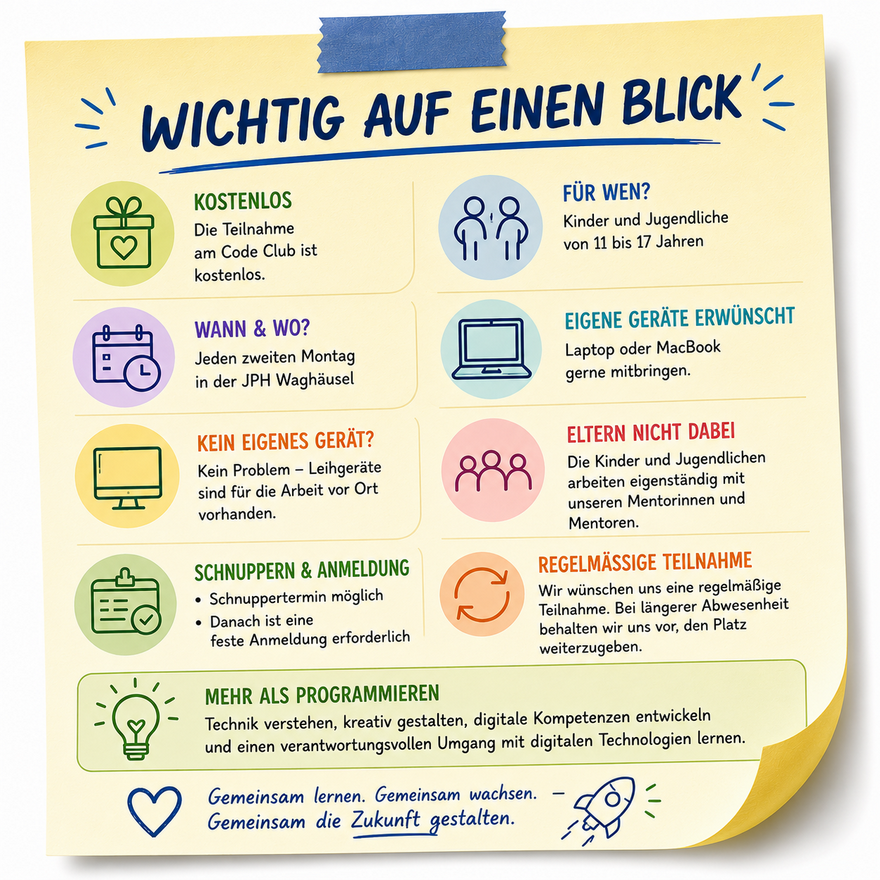

Der Code Club Waghäusel richtet sich an Kinder und Jugendliche im Alter von 11 bis 17 Jahren, die Interesse an Programmierung, Technik und digitalen Technologien haben oder diese Welt kennenlernen möchten.
Die Teilnahme am Code Club ist kostenlos. Vorkenntnisse sind nicht erforderlich. Unser Angebot richtet sich sowohl an Anfängerinnen und Anfänger als auch an Jugendliche, die bereits Erfahrungen gesammelt haben. Jedes Kind lernt bei uns in seinem eigenen Tempo und wird individuell unterstützt.
Wir möchten Kindern und Jugendlichen die Möglichkeit geben, digitale Technologien nicht nur zu nutzen, sondern auch zu verstehen und aktiv mitzugestalten. Dabei lernen die Teilnehmerinnen und Teilnehmer Programmiersprachen kennen, entwickeln eigene Projekte und sammeln Erfahrungen mit Robotik, Mikrocontrollern und technischen Anwendungen.
Neben technischen Fähigkeiten fördern wir Kreativität, Problemlösungskompetenz, Teamarbeit sowie einen verantwortungsvollen Umgang mit digitalen Medien und Technologien.
Interessierte Kinder und Jugendliche können den Code Club zunächst unverbindlich kennenlernen und an einem Schnuppertermin teilnehmen.
Da die Anzahl der Plätze begrenzt ist, ist nach dem Schnuppern eine verbindliche Anmeldung erforderlich. Wir wünschen uns eine regelmäßige Teilnahme, damit die Kinder und Jugendlichen kontinuierlich an ihren Projekten arbeiten und gemeinsam mit der Gruppe lernen können.
Sollte ein Platz über längere Zeit nicht genutzt werden oder eine regelmäßige Teilnahme nicht möglich sein, behalten wir uns vor, den Platz an Kinder oder Jugendliche auf unserer Warteliste weiterzugeben.
Der Code Club Waghäusel findet an jedem zweiten Montag in den Räumlichkeiten der JPH Waghäusel statt.
Während der Treffen arbeiten die Kinder und Jugendlichen eigenständig mit den Mentorinnen und Mentoren des Code Clubs. Die Eltern nehmen daher nicht an den Veranstaltungen teil.
Unser ehrenamtliches Team begleitet die Teilnehmerinnen und Teilnehmer während der gesamten Veranstaltung und unterstützt sie bei ihren Projekten und Fragen.
Das Mitbringen eines eigenen Laptops oder MacBooks ist ausdrücklich erwünscht, da die Kinder und Jugendlichen so auch zu Hause an ihren Projekten weiterarbeiten können.
Sollte kein eigenes Gerät vorhanden sein, ist dies kein Problem. Für die Arbeit vor Ort stehen Leihgeräte zur Verfügung, die während der Treffen genutzt werden können.